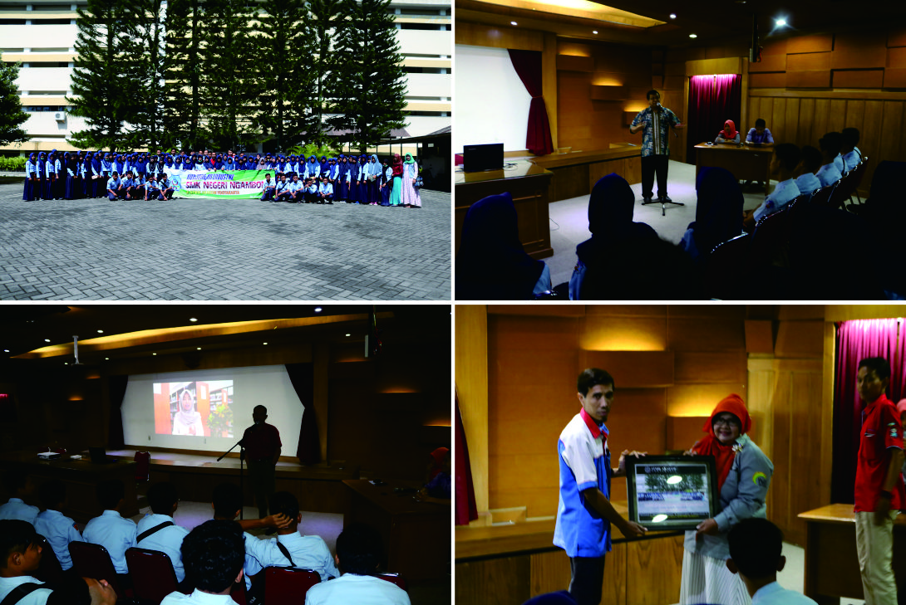
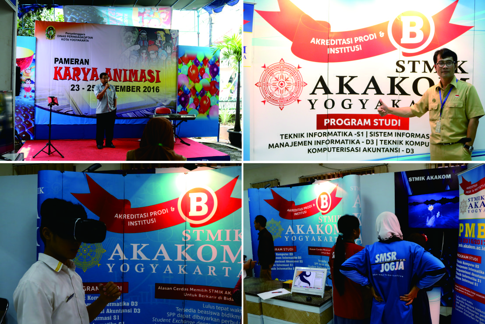
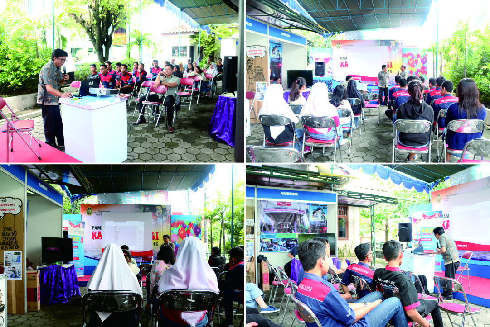

Kunjungan SMK N NGAMBON Bojonegoro Ke STMIK AKAKOM
 Sabtu, 26 November 2016, sebanyak 100 orang siswa siswi dari SMK N NGAMBON Bojonegoro berkunjung ke STMIK AKAKOM Yogyakarta. Dalam kunjungannya, Siswa Siswi yang berasal dari program studi Teknik Komputer dan Jaringan dan Teknik Instalasi tenaga Listrik, diperkenalkan dengan STMIK AKAKOM, mulai dari sejarah, model pembelajaran, biaya kuliah, beasiswa serta fasilitas ...
Hari Terakhir Pameran Karya Animasi, AKAKOM Tampilkan AR
 Jumat (25/11), Pameran Karya Animasi memasuki hari terakhir. Acara ini sudah berlangsung sejak Rabu, 23 November 2016. STMIK AKAKOM, sebagai salah satu peserta pameran ini, kali ini menyuguhkan seminar pembuatan animasi mobile, yaitu menggunakan AR (Augmented Reality). Tampil sebagai pembicara adalah Bapak Pius Anggoro, yang juga Dosen di STMIK AKAKOM. Dalam...
Pameran Animasi Hari Kedua, AKAKOM Demo Animasi
 Kamis (24/11), Dinas Perdagangan, Perindustrian, Koperasi dan Transmigrasi (Dinas Perindagkoptan) menggelar acara pameran "Karya Animasi" Yogyakarta. Acara bertempat di griya UMKM Jalan Tamansiswa No.39 Yogyakarta. Kegiatan ini menampilkan produk produk animasi dari beberapa industri kreatif, salah satunya adalah STMIK AKAKOM YOGYAKARTA.....